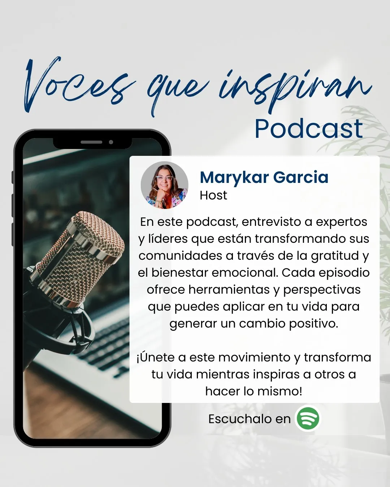
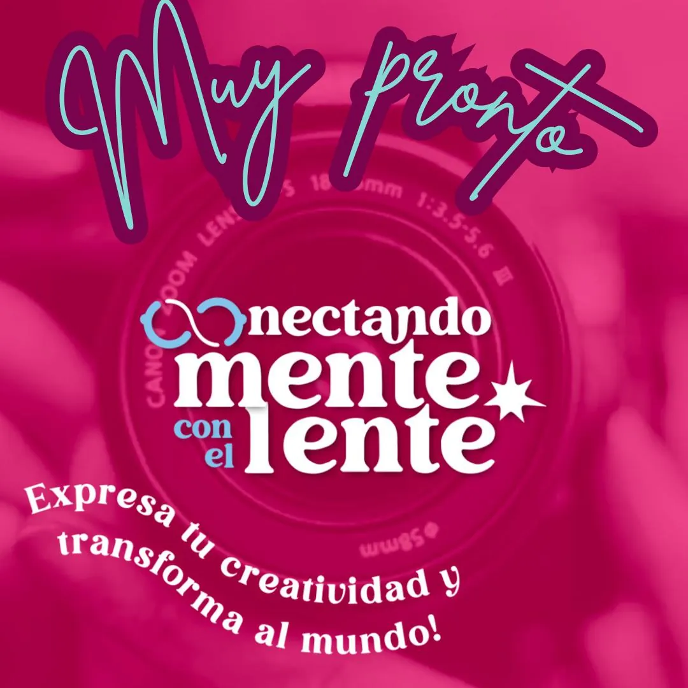

Proyectos que generan un impacto positivo en la comunidad
En Gratitude Giving Foundation nos comprometemos a realizar proyectos que transforman vidas. Actualmente trabajamos en diversos proyectos que buscan crear un futuro más prometedor para todos.
 Programa insignia
Programa insigniaVistiendo Sueños
Llevamos esperanza y dignidad a comunidades vulnerables mediante la entrega mensual de ropa, elaborada en alianza con Dress a Girl Around the World. Con el apoyo de voluntarios y talleres de costura, Vistiendo Sueños llega a fundaciones de toda América Latina, conectando corazones y transformando vidas con cada entrega.
 Talleres
TalleresCambiando mentes, iluminando vidas
Talleres e iniciativas como Mi imagen con amor y estilo, Mamis Azules por la concientización del autismo y el apoyo a los héroes de Estrellita de Belén.

PodcastVoces que Inspiran (Podcast)
Nuestro podcast presenta a personas y organizaciones que generan un impacto positivo en sus comunidades, con herramientas y perspectivas que puedes aplicar en tu vida.
 Evento anual
Evento anualBingo Brunch Bazar
Un evento con boletos agotados que reunió a nuestra comunidad para celebrar nuestro aniversario y recaudar fondos vitales para nuestro programa insignia, Vistiendo Sueños.

ConcursoConectando mi mente con el lente
Un concurso de fotografía para que los jóvenes expresen su creatividad sobre temas importantes como la salud mental, la inclusión y la innovación.
 Talleres
TalleresConectando Voluntades
Creamos espacios donde la colaboración y el aprendizaje fortalecen a las comunidades.
 Capacitación
CapacitaciónCreciendo Juntos
Capacitamos hoy para fortalecer el mañana. Nuestro programa de capacitación continua está diseñado para empoderar a las fundaciones a crecer y lograr la sostenibilidad.
Sé parte del cambio
Súmate como voluntario, patrocinador o aliado y forma parte de este movimiento de gratitud, impacto y transformación. Juntos transformamos vidas, fortalecemos comunidades y multiplicamos la esperanza.

¡Únete y sé parte del cambio en la vida de estos jóvenes!
Ayuda a los jóvenes a encontrar su camino con “Direcciona tu futuro”
- Público objetivo
Jóvenes de 16 a 20 años que buscan su vocación y su propósito.
- Desafíos que enfrentan
La incertidumbre sobre su futuro provoca deserción escolar, problemas de salud, trabajos insatisfactorios y limitaciones en su crecimiento personal y profesional.
- Nuestra solución
Ofrecemos orientación personalizada, desarrollamos habilidades clave y brindamos oportunidades de networking para que cada joven trace su propio camino hacia el éxito y la realización.
- Tu donación marca la diferencia
Con tu apoyo podemos llegar a más jóvenes y brindarles las herramientas y la inspiración que necesitan para alcanzar su máximo potencial.

¿Tienes un proyecto en mente?
Recibimos con gusto propuestas de proyectos alineadas con nuestra misión. Si tienes una propuesta, escríbenos a contact@gratitudegivingfoundation.org para conocer más sobre el proceso.